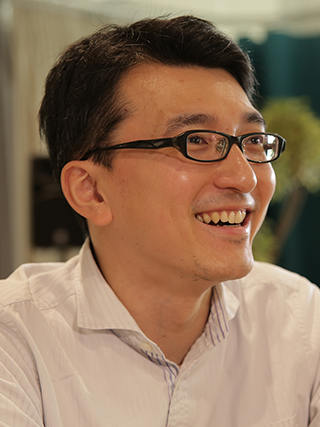

記号創発ロボティクス：世界モデルからコミュニケーション創発まで

谷口 忠大
立命館大学情報理工学部情報理工学科 教授
講演者経歴
2006年京都大学工学研究科博士課程修了。博士（工学・京都大学）。2005年より日本学術振興会特別研究員 (DC2)、2006年より同 (PD)。2008年より立命館大学情報理工学部助教、2010年より同准教授。2015年より2016年までImperial College London客員准教授。2017年より立命館大学情報理工学部教授、また、パナソニック客員総括主幹技師としてAI研究開発に携わる（国内初の大学から企業へのクロスアポイントメント事例）。専門は人工知能、創発システム、認知発達ロボティクス、コミュニケーション場のメカニズムデザイン。記号創発システムという概念を提唱し、また記号創発ロボティクスと呼ばれるAIやロボットを作ることにより人間のコミュニケーションの本質的理解につなげる研究領域を創成している。様々なプロジェクトや産学連携を通して機械学習技術の応用に関する研究に従事。また全国に広まる書評を通じたコミュニケーションの場作り手法であるビブリオバトルの考案者でもある。一般社団法人ビブリオバトル協会代表理事。計測自動制御学会学術奨励賞、システム制御情報学会学会賞奨励賞、論文賞、砂原賞、Advanced Robotics Best Paper Awardなど受賞。主著に「心を知るための人工知能: 認知科学としての記号創発ロボティクス」共立出版、「賀茂川コミュニケーション塾」世界思想社、「コミュニケーションするロボットは創れるか」NTT出版、「ビブリオバトル」文藝春秋、「記号創発ロボティクス」講談社、「イラストで学ぶ人工知能概論」講談社「僕とアリスの夏物語 人工知能の、その先へ」岩波書店など。
日時：10月13日（木）
12時〜13時
場所：総合研究7号館情報2講義室（1階 101）
人間の知能はマルチモーダルな知覚系を介した様々な観測、身体に基づく環境との身体的相互作用、他者との記号的相互作用を通して構成されていく存在である。近年の人工知能技術の進歩はその知的処理の多くを表現し、応用可能としてきた。しかし実世界において発達する自律的知能の構成と、それに基づく人間知能理解にはまだ多くの挑戦がある。記号創発ロボティクスは講演者らが牽引してきた研究領域であり、社会において創発する言語系（記号系）まで含めて、認知システムの環境との相互作用に基づく環境適応に基づき説明し、構成しようとする構成論的アプローチである。本講演では世界モデル、大規模言語モデルやコミュニケーション創発といった話題に触れながら、その考え方や成果について紹介する。